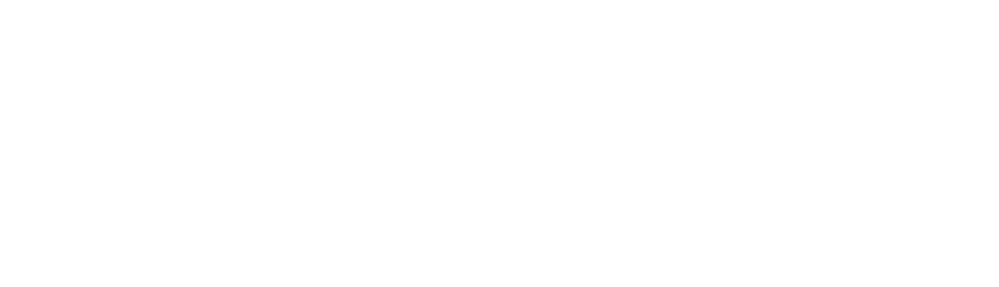

Electrochemical Interface and Conversion Lab
Discovering interfaces
as they evolve.
We combine multimodal in situ electrochemical methods to establish long-term structure–performance relationships in working electrodes.
Led by Dr. Weiran Zheng, we track changes in interface structure alongside electrochemical signals to identify early signs of activity loss and predict electrode lifetime.
